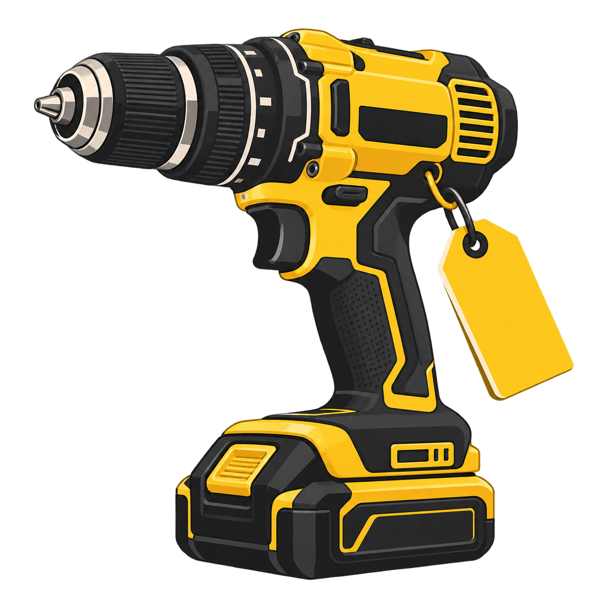
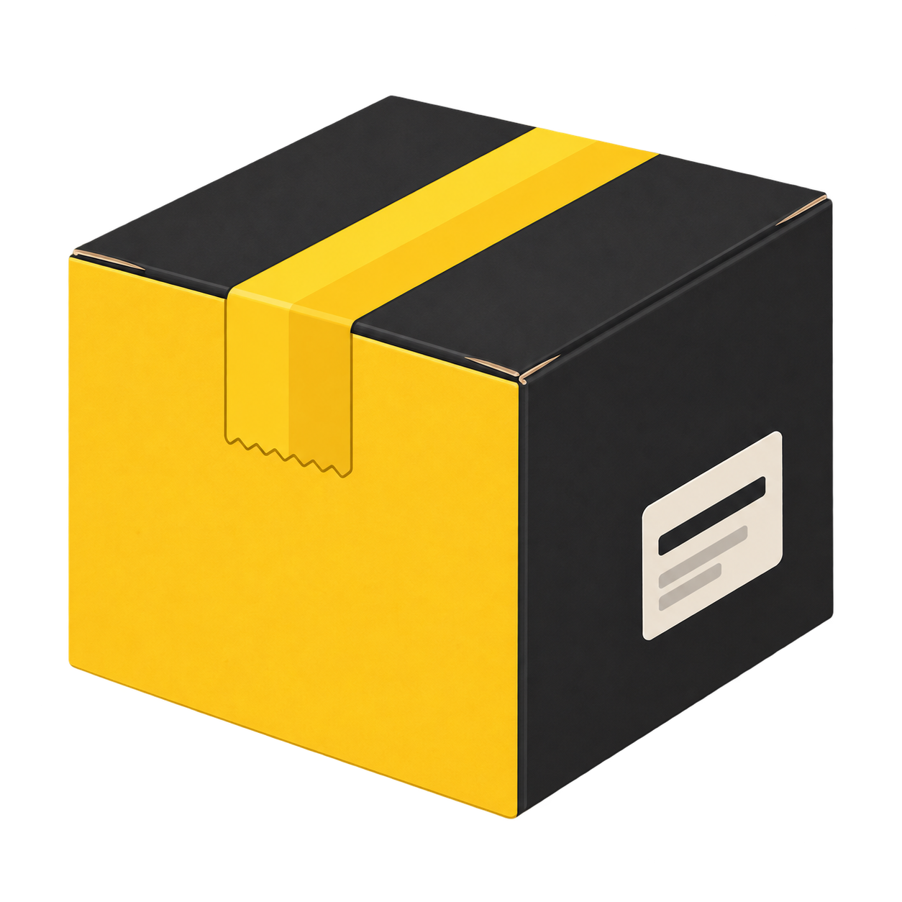
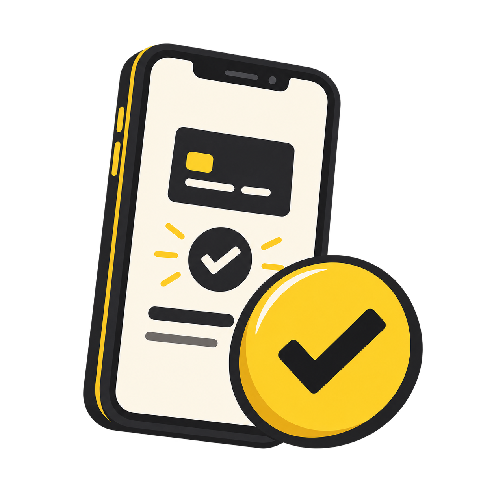

Budet bygger på ditt verktyg
Exakt modell, funktion, slitage och tillbehör ger underlaget. Ett repigt verktyg är inte automatiskt ett trasigt verktyg.
Från verktygslådan till nästa jobb
Du berättar vad du har. Vi hjälper verktyget vidare.

1Välj modell, funktion och skick. Ange vad som följer med och se budet innan du bestämmer dig.

2När du väljer att gå vidare får du instruktioner för packning och frakt som passar försändelsen.

3Vi kontrollerar verktyget. Stämmer det med dina uppgifter går affären vidare till utbetalning.
En affär du förstår
Du ska veta vad du tackar ja till.
Och vad som händer om något inte stämmer.
Exakt modell, funktion, slitage och tillbehör ger underlaget. Ett repigt verktyg är inte automatiskt ett trasigt verktyg.
Du ser erbjudandet innan du går vidare. Att prova prisflödet betyder inte att du har sålt något.
Om kontrollen visar att verktyget avviker från beskrivningen får du ta ställning till ett nytt bud.